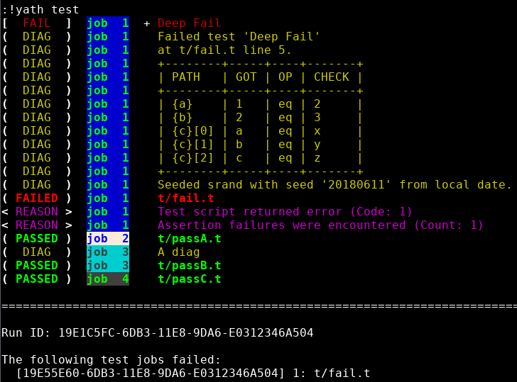
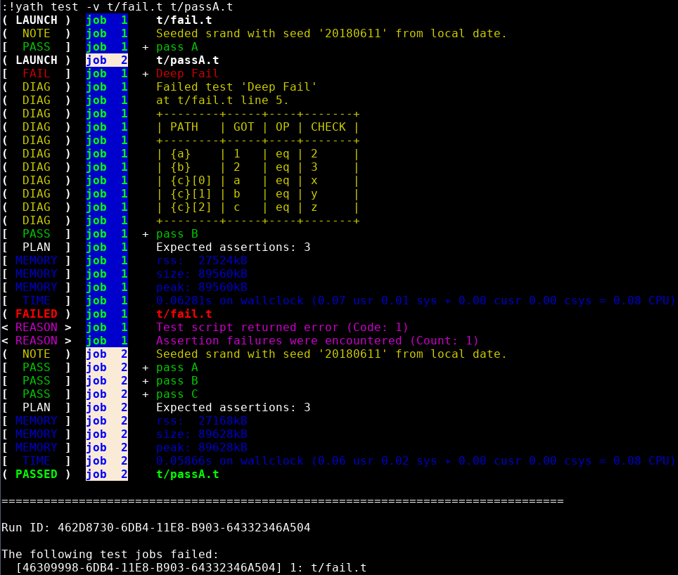
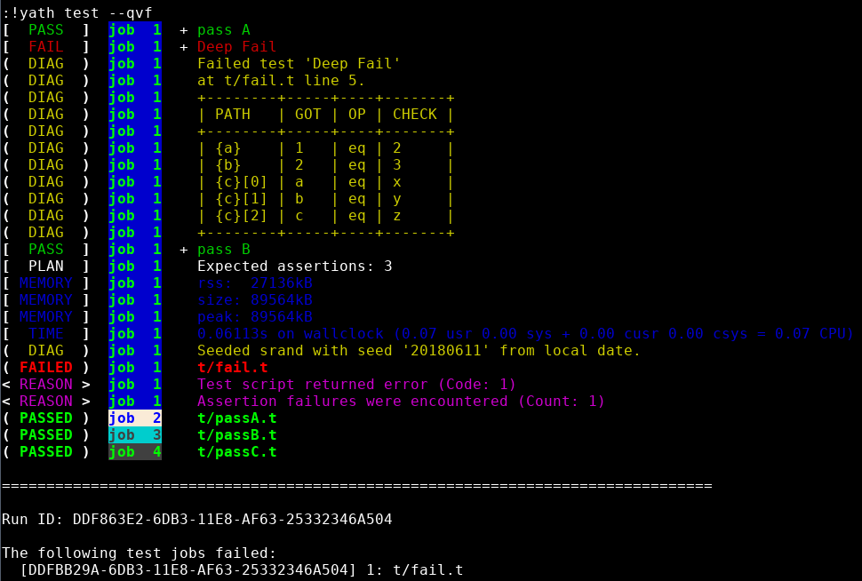

The rules are similar to prove's, passing test gets one line, diagnostics messages and failed tests are still printed.
Yath output includes the job the output came from, useful when things run concurrently.


Failing tests are completely verbose.
Output is buffered until the test file is complete, so no muxing.

You can write your own renderers for yath to completely control the output.
The default renderer is called Test2::Harness::Renderer::Formatter, which lets you use any Test2 formatter as your output.
Writing a custom formatter is intended to be simple/trivial, but in practice there is still some work to do on that.
Renderers being worked on by someone somewhere (not me):
The event log is a jsonl file containing every event the harness saw.
The event log is a lossless format that will let you completely replay a test run (or parts of it) without actually re-running your tests.
The event log has Test2 events, with all their context data, in most cases there was no TAP conversion involved.
stdout/stderr exit codes, and all other data the harness collects are placed into events in the log.
There are several tools to process logs and provide useful metrics or summarize results.